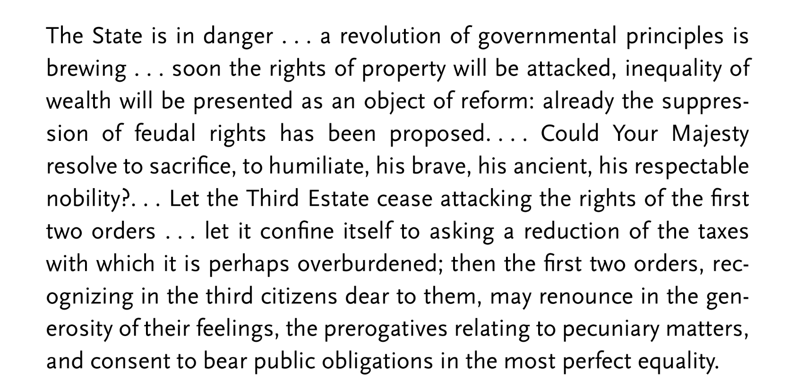

"On the morning of July 14, 1789, a crowd of Parisian workers set out to attack the royal prison of the Bastille. Joined by deserting soldiers who brought cannons, and ignored by Royal Army troops camped nearby, the crowds forced their way into the fortress by late afternoon, killing the governor and parading his head on a pike. That evening King Louis XVI reportedly asked a duke, "is this a revolt?" To which the duke replied: "No Sire, it is a revolution"" – excerpt from J. A. Goldstone's book, Revolutions, A Very Short Introduction.
In the second episode of this series, we continue to blend into our topic of Political Ideologies through French Revolution. Hope is to present a succinct summary of the events, and then proceed to ask the mammoth question, 'Why?' Welcome to Hitchens' Razor!
Someone had noticed that it is hard to talk about the French Revolution, not for the lack of resources, because there is a plethora of it. So, before we begin the revolution, may I regurgitate our gratefulness to the following authors for their great work on the topic, which has immensely helped us to tell the tale.
- Georges Lefebvre, The French Revolution, translated to English by Elizabeth Moss Evanson
- William Doyle, The French Revolution, a VSI
- Jack Goldstone, Revolutions VSI
and a shout out to Jawaharlal Nehru for 'The Glimpses of World History', and H.G.Wells as well for 'A Short History of the World'.
Although the narrative is simplified to be retold as a lucid story, there are many places where we have directly quoted from some of the above authors without saying so. We hope to leech on your ample-supple magnanimity to forgive us.
Shall we?
The Story
Our story begins in 18th century of the Common Era.
France's attempt to remain a global super force meant waging war with other kingdoms. They fought all over the world, at both land and the sea, in America, in Asia, and in native Europe. Engaging in relentless war means destruction; destruction calls for rebuilding; rebuilding costs money. During hard times, money demands either financial discipline or bankruptcy. For France, it was the latter. They were running out of money.
How did the French fund these wars in the first place? Well, the Finance minister borrowed money from Freemason banks and wealthy individual financiers of Europe. Wait, was there a system of government? Yes! It is what we now call the ancien regime. Under ancien regime the French society was then classified into three orders: The nobles(wealthy and powerful), The clergy(God people), and the Third Estate, i.e. everyone else. <beat> Geographically, France was divided into provinces, and there were courts or parlements for each province. The parlements were judicial bodies with around 1100 judges nationwide. The members of the parlements were aristocrats or nobles who had bought or inherited their offices, and were independent of the king. They wielded decision making powers on a wide range of subjects. Apart from this, the king had his ministers to take care of the kingdom's affairs. Okay, back to funding wars. For France, supporting the American war of Independence to defeat the British was dear. They had availed loans to enable the military, and borrowed even more money to pay off the arrears. <beat> Such was the deficit in August 1786, the Finance minister sent a letter to the king mentioning the need for a state reform. It was first of its kind act for France. Things turned worse in the following year; so much that in March 1788 the first budget of the old regime was needed to be drafted. Oddly enough, this was also the last budget of the old regime. It estimated a 20% deficit at 126 million livres. More than half of the expenditures were attributed to paying debts alone. <beat> The taxes in the country was already high, so raising taxes further to clear the arrears was out of the question. There existed a solution to the problem though, that is to bring equality of taxation for different classes of people and provinces of the country. <beat> And that's how it all began!
Shall we move on from the state of economics to the state of people? French revolution could be broadly divided into three stages. The Aristocratic revolution, the Bourgeoisie revolution, and the Popular revolution. We shall begin with the Aristocracy's quarrel, that is the Nobles' and Clergy's quarrel with their king.
At the verge of bankruptcy, the finance minister proposed new measures to raise funds. This included:
- A direct land tax upon all landowners without any exception
- Other taxes to be shared out without distinction as to order or class
- Freeing the grain trade from all controls, by abolishing internal customs barriers
- Asking clergy to clear its debt by selling the Church's manorial rights
The good minister thought that financial stability would strengthen his king's royal power, and reduce the opposition from parlements. The King Louis VI was a weak monarch; <beat> he had very little power and control over the country's affairs. He was considered almost a laughing stock of his courtiers and all those who had heard the stories. Aware of this status, the finance minister used indirect methods to get the tax reforms done. He convoked a meeting with the representatives of aristocrats and the clergy, also known as the Assembly of Notables to discuss the reforms. He expected the Notables to agree to the changes because of the economic condition of their kingdom. But this move backfired, as it amplified the frailties of the king, and it angered the Notables even more, as they thought it was an attack on their powers and rights. They rejected the proposal and after some internal politics the finance minster was dismissed. The replacement minister soothed the aristocracy by retracting the proposal, and instead offered to increase the stamp duty. But the Notables and the parlements rejected the new tax proposal as well, because this decision was not in their power, but was to be made by the wider group called Estates-General or the States-General representatives of France.
The debt remained, and the new finance minister was now desperate to raise money. Uncertain of the support from the parlements and aristocracy, he had the King pass an edict as a royal order superseding any opposition. Nevertheless, opposition duly came from a duke, and the duke was exiled by the King in retaliation. The parlements and lower tribunals and the aristocrats promptly protested, which turned violent at places. Tit for tat continued as the King started showing hints of despotism. The treasury was almost empty at this point amidst the mayhem, and the King finally gave away and dismissed the Finance minister again. The consensus pointed to the convocation of Estates-General for any tax related decision making. Like before, that is in 1614, the convocation was to have three orders representing the classification of the French society; The clergy, The nobles, and the Third Estate.
What you have heard until now is the revolution that happened in the background. The Aristocratic Revolution! The Nobles and Clergy against the monarch. The second part, which you are about to hear is called the Bourgeoisie Revolution.
The Third Estate, that is everyone else also contained the bourgeoisie. We have spoken a great deal about the rise of the middle class, i.e. the bourgeoisie in the previous episode. The news of gathering of the Estates-General sent tremors of excitement through the members of the Third Estate. Until then, they have had not seen much need for opposing the two classes above them. Suddenly the mood shifted. Many associations sprung up in this time - academies, agricultural societies, philanthropic groups, reading circles. They sought equality in the society thorough arguments of reason and natural right. Equality of taxation, and voting by heads rather than order was their major demands. Of course, the burden of the proposed new taxes fell disproportionately on the shoulders of third estate, when compared to the clergy and the nobles. Meanwhile the Nobles and the Clergy assured of their birth and divine rights, demanded a vote at the this meeting. Since Estates-General voted by order than by head, any two estates could outvote a third. This arrangement naturally favoured the upper classes. <beat> The mood of aristocracy during the French revolution is captured in this extract of a letter sent to the king by the royal princes.

Estates-General. France was all set for the rendezvous. A hotel was arranged for the meetings of the clergy and the nobility. A big national hall was arranged for the third estate to meet. All party meetings were to be held in a large room nearby. The nobles and clergy dressed in full regalia were seated on elevated platforms, whereas the third estate representatives dressed in black were seated on chairs at the floor level. On 5th May 1789, the proceedings began with a brief speech by the king. Then the finance minister harangued the audience, speaking at length about the financial situation with all sorts of boring details. He mentioned the proposed improvements of the situation, but omitted the subject of constitutional reforms, which everyone was desperate to hear. But he mentioned the voting would happen by order as before. There were serious opposition to this, but at that time the representatives didn't know each other well, so they proceeded with caution, and a delaying tactic was used. Stalemate continued where each order discussed further action in their allocated places. At the beginning, the Third Estate had taken a new name for itself; communes or, Commons. Not many knew that word evoked a vague memory of popular resistance to the feudal lords. For the Commons, they simply refused to be relegated to the third rank.
Few days later, the nobility, strong on its belief, announced themselves as a separate order. The Clergy meanwhile was in trouble because a large proportion of the parish church or the district church priests, supported the Commons. The bishops sensed imminent defection of the parish priests. So they requested the king to intervene. The King asked the conferences to be resumed at the common place, in the presence of his ministers. The finance minister further said that if no agreement could be reached, then the king's decision would be final. This put the Commons in a difficult position, but ironically the nobility rejected that royal arbitration proposal.
The Commons now invited privileged members to join them. Many parish priests did, but not one noble. With the new members the Third Estate's name was again changed to National Assembly. They demanded that all three classes be merged and voting shall be done by heads instead of order. They further claimed the power to consent to taxation. The nobility now ended their resistance towards the king and begged him to put the Third Estate back in line. But by now the majority of the clergy declared in favour of merging the three orders. Finally the finance minister came out and proposed equality of taxation and voting by heads. The King still hesitated. One fine day, the National Assembly, formerly known as the Commons, formerly known as the Third Estate discovered that the national hall where they met regularly to discuss their affairs was closed without any notice or warning. Certainly not defeated yet, they immediately convened in a Tennis court nearby, and took an oath to give France a constitution.
The king now disregarding his Finance minister, came up with his own declarations guaranteeing a constitutional system, civil liberty etc, but equality of taxation and voting by head was omitted. He then dismissed the assembly, but the members of National Assembly did not move. They said: "We will not stir from our seats unless forced by bayonets." Following this, many nobles also joined the commons, and the king eventually gave away and asked others to follow the suit. The legal, peaceful revolution of the bourgeoisie appeared victorious at this point. The nobles considered this as a humiliation, albeit not accepting defeat. The king on the other hand saw the members of National Assembly as rebels. First step, they had to get rid of the Finance minister who had supported the National Assembly's cause. He was dismissed arbitrarily and exiled. The bourgeoisie revolution seemed lost, but they were saved <beat> by the people, the proletarians, the peasants. That is the third part of the French Revolution, the Popular revolution!
We hope to talk more about the economic crisis and its effect in a later episode.
For the lower classes, the peasants and artisans the crisis plus the recent crop failure meant hunger and poverty. The hammer-crush burden of the nation's taxes fell on their thin shoulders. Bread was their staple, and it's prices kept increasing steadily. The old Finance minister had ordered large purchases from abroad, and labour camps were setup for distributing food. People, especially in the countryside were driven into desperation by the active tax collectors. The masses had to pay taxes, both direct and indirect, and thus pay for their own oppression. In all these the nobles and monarchy enjoyed their pomp and luxury. The hungry peasants of France were asked to eat grass by a governor. There were millions of professional beggars in France then. But the news of Estates-General kindled hope, a vision of future in them, especially since it had only happened two centuries ago. They thought, since the king consulted his people, he pitied their plight, writes Lefebvre. The great hope also inflamed fearful passions. The Third Estate was convinced that the nobles would stubbornly defend their privileges. The villagers thought the nobles would crush them using any measures. Foreign powers would be called to help put down the villagers. Meanwhile, in the background the dismissal of the good finance minister was seen as an act of aristocratic conspiracy. So they thought they should fight, taking up arms, releasing prisoners and recruiting them, forming their own army against the nobles. The king and the courts thought they should react to this social hullaballoo to keep things under control. Suddenly the capital city was filled with 20000 soldiers, much of them were foreign mercenary troops. That's that! When a German troop tried to disperse crowd in Paris, the hungry citizens decided to act, and French guards and military decided to help the people. They started ransacking the strong points in the city for Guns and food. Storming into a prison, releasing its inmates, and brutally killing the guard commander who had earlier ordered to fire on them, the taking of Bastille was complete. The fall of Bastille.
This quote from William Doyle's French Revolution sums up the episode, "The National Assembly had seized sovereign power in the name of the France Nation. It was the founding act of the French Revolution. If the Nation was sovereign, the king no longer was."
The National Assembly was indirectly helped by the proletarians and the peasants, and other hungry people of France. One thing to remember is that none of these happened overnight. For instance, the convocation of the Estates General was in fact proclaimed in mid 1788, whereas the revolution officially kicked off a year later in 1789. The economic and political crisis is said to have begun at least an year earlier before the proclamation of Estates-General in 1787. It's funny, that Bastille prison only had 7 inmates when it was stormed. It rather shows the fall of a symbol of royal power and pride, and the release of new ideas. The politics of social antagonism which started in Paris have had now spread to the countryside. The whole feeling later was transcended into paranoia of loss. We shall stop our narration of the French revolution here. As they say, the rest is history! That in summary includes:
- Abolition of privileges
- October Days, when a group of women marched to Versailles to escort the King to Paris, the epicentre of revolution.
- Church property nationalised
- Nobility abolished
- Parliament abolished
- Civil constitution for Church, i.e. a common platform for Catholics and Protestants
- War with neighbours
- Liberty Fraternity Equality
- Monarch executed in 1793
- Massacres
- Napoleon
and much, much more if you wish to zoom in, enough content for another series. But now we must stop and try to identify links to Political Ideologies.